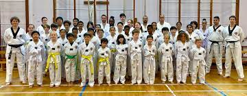

Up to year 5(10 years old), i went to eaton house the manor in clapham. in year 6 i left eaton house and became homeschooled along with my younger brother who was in year 3 at the time and at the start of 2019 we started having tutors come to our house regularly. within two years we had both completed foundtation maths with grade 5 and the year after that i had done higher maths and physics passing both with 8s(a*s). Soon after this i completed futher maths with a 7 and now am studying for another 4 gcses and 2 A levels (maths and physics). Along with academic stuff, we had alot of extra curricula such as taekwon-do, cricket, tennis and I am now a air cadet at 33f battersea squadron.
